Purpose
GeoServer is an open source software server written in Java that allows users to share and edit geospatial data. Designed for interoperability, it publishes data from any major spatial data source using open standards.
That's why, we have a requirement to create a layer using Elasticsearch GeoSpatial data on GeoServer and displaying on map using Leaflet.
However, leaflet uses EPSG:3857 projection which we have to tackle because Geoserver uses EPSG:4326 projection.
Dependency
- ElasticSearch latest
- ElasticGeo 2.13.2
- GeoServer 2.13.2
Steps to Create a Layer
- Build the geoserver docker Images using this article
- Start the ElasticSearch
docker run --name elasticsearch-latest -p 9300:9300 -p 9200:9200 -t -d docker.elastic.co/elasticsearch/elasticsearch:6.1.2 - Start GeoServers
docker run --name geoserver -p 8080:8080 -d geoserver:${IMAGE_TAG} - Open Kitematic
You should have Geoserver and Elasticsearch running like following Kitematic screenshot
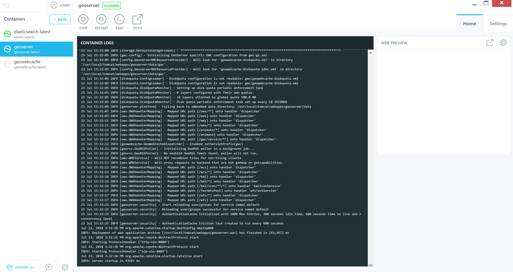 - Copy python script from here
and run it by issuing the command to insert some data into Elastic.
This python script first create ES mapping for the index, then start to insert the data into Elastic by bulk load, each bulk will insert 20000 point into index, it will repeat 55 times so we can insert more than 1 million records into index.
python insertgeoshapedata.py - Using Chrome Extension Elasticsearch Head by installing https://chrome.google.com/webstore/detail/elasticsearch-head/ffmkiejjmecolpfloofpjologoblkegm?hl=en-US, after install,
we can view the data in Elasticsearch

- Open the local Geoserver http://localhost:8080/geoserver/ with admin username and geoserver as password
- Create Data Store and Layer for Elasticsearch
- Add new Store 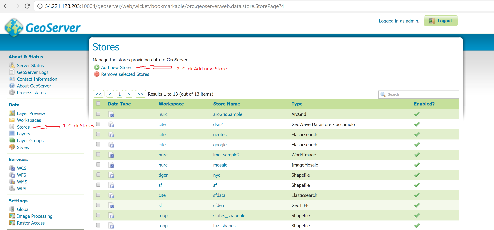
- Select Elasticsearch Index as Vector Data Sources 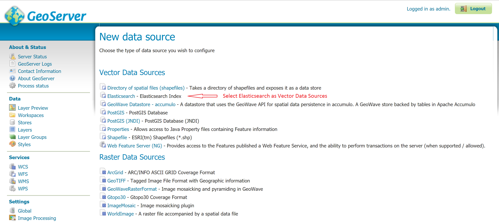
- Put the following value in New Vector Data Source
If you are running Docker for mac, you need to do following to find the IP address of ElasticSearch host- First get the CONTAINER ID for elasticsearch-latest by running
docker ps. You will get following:CONTAINER ID IMAGE COMMAND CREATED STATUS PORTS NAMES 210186e03ebf geoserver:latest "catalina.sh run" 2 weeks ago Up 2 hours 0.0.0.0:8080->8080/tcp geoserver 39e03b4ed70f docker.elastic.co/elasticsearch/elasticsearch:6.1.2 "/usr/local/bin/do..." 2 weeks ago Up 2 hours 0.0.0.0:9200->9200/tcp, 0.0.0.0:9300->9300/tcp elasticsearch-latest - Second inspect the container using
docker inspect 39e03b4ed70f. You will see following output and you need see IPAddress attribute for IP address... "Networks": { "bridge": { "IPAMConfig": null, "Links": null, "Aliases": null, "NetworkID": "d5cc4ef796e322d23f9ff9a6aa90cbd16b704a65faaad71394486ec8f8ffc3c7", "EndpointID": "894d5463fa84cb17f6878c50c92386a4597565113ed6777718223fa8448ba30d", "Gateway": "172.17.0.1", "IPAddress": "172.17.0.2", "IPPrefixLen": 16, "IPv6Gateway": "", "GlobalIPv6Address": "", "GlobalIPv6PrefixLen": 0, "MacAddress": "02:42:ac:11:00:02", "DriverOpts": null } } ....
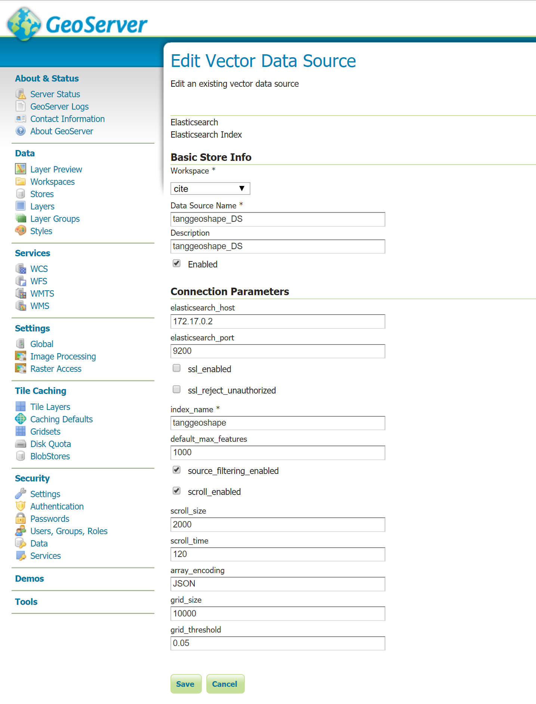
- First get the CONTAINER ID for elasticsearch-latest by running
- After click Save, New Layer will show up automatically. Layer name is tanggeoshape_type, tanggeoshape_type is the type in elasticsearch index tanggeoshape, click Publish 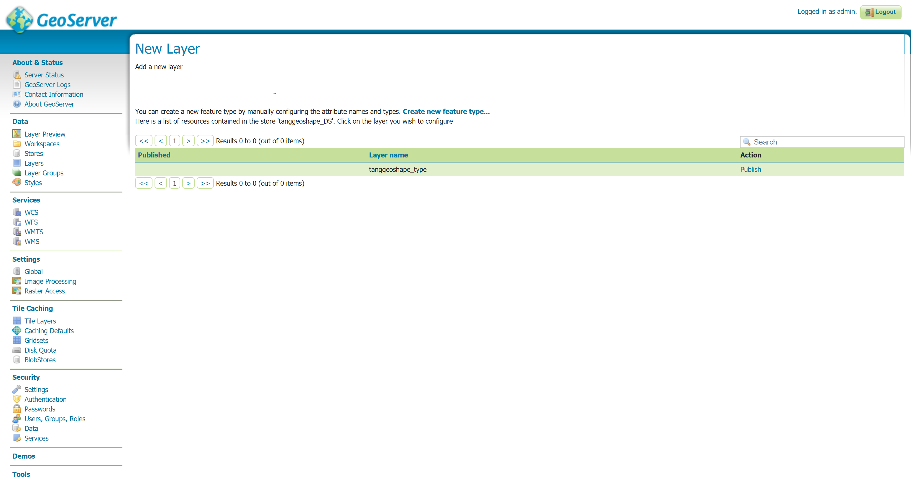
- Elasticsearch fields configuration window popup, click the Apply 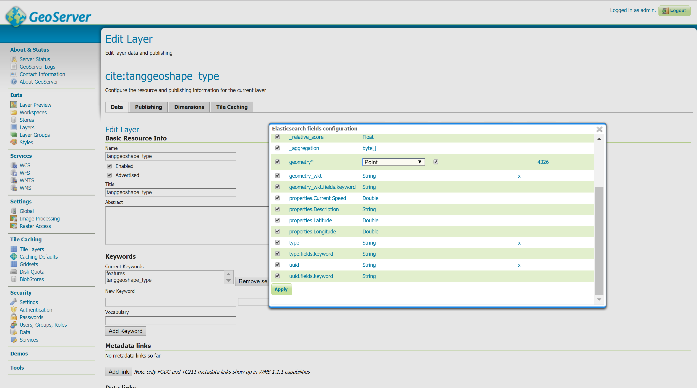
- Edit Layer, change the Name of layer so it is not existed in the system
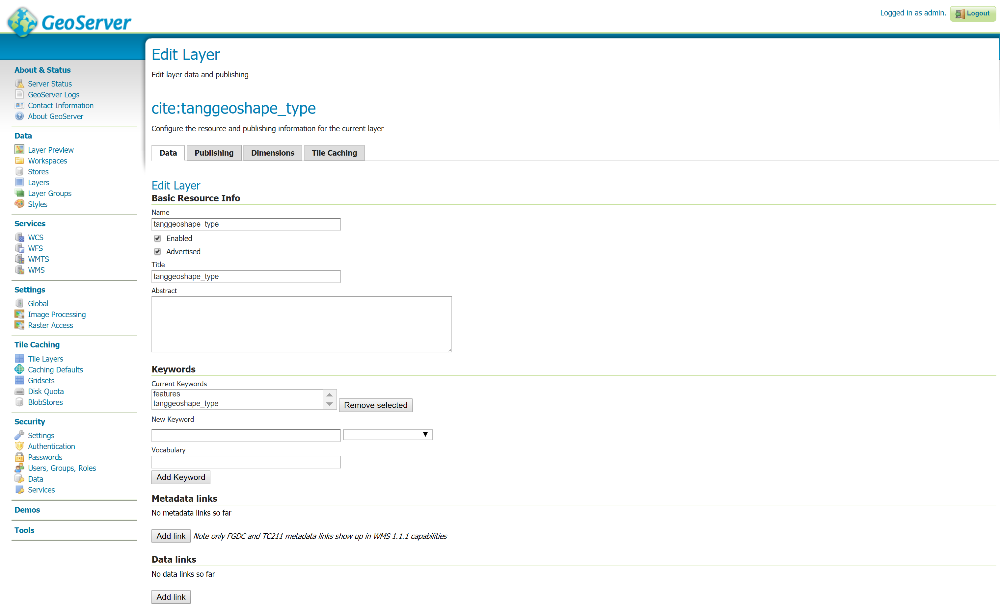
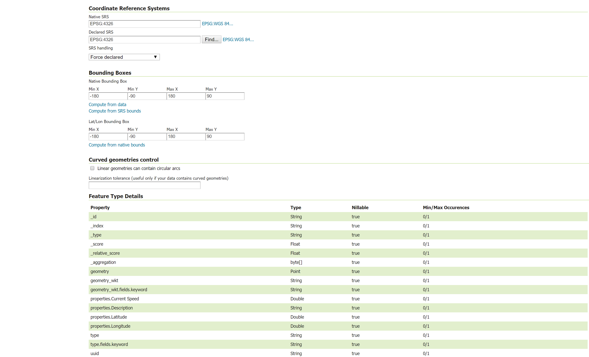

- New Layer 'tanggeoshape_type' will show up under Layers 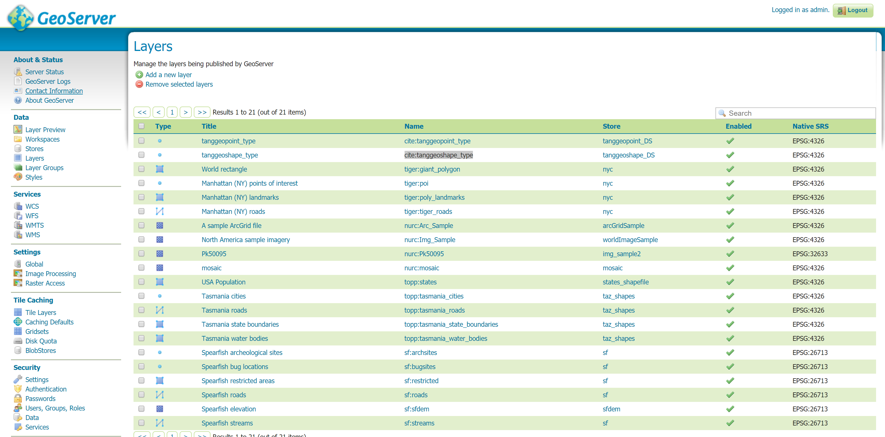
- Preview the new Layer 'tanggeoshape_type' by clicking under
Layer Previewtab on left 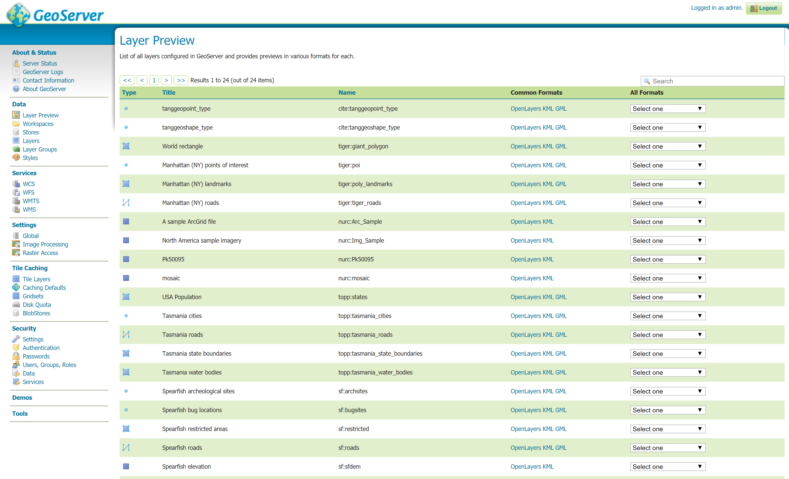 - After click OpenLayers, the data will show up in the geoserver map 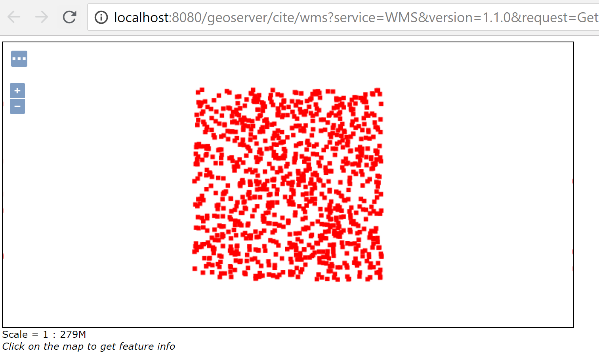
- Follow https://astuntechnology.github.io/osgis-ol3-leaflet/index.html to display the points on LeafLet
- Get the code from Reository
git clone https://github.com/AstunTechnology/osgis-ol3-leaflet - Update the leaflet.js as follows which is inside the code which you just clone on above step.
var southWest = L.latLng(-180.0, 90.0), northEast = L.latLng(180.0, -90.0), mybounds = L.latLngBounds(southWest, northEast); var map = new L.Map('map', { crs: L.CRS.EPSG3857, layers: [ new L.TileLayer( 'http://{s}.tile.openstreetmap.org/{z}/{x}/{y}.png', { attribution: 'Map data © OpenStreetMap contributors' } ) ] }); map.setView([0.0, 0.0], 2); // -- Load GB disticts as a WMS layer -- var districtLayer = L.tileLayer.wms('http://localhost:8080/geoserver/cite/wms?tiled=true&', { layers: 'cite:tanggeoshape_type', format: 'image/png', transparent: true, maxZoom: 14, minZoom: 0, continuousWorld: true, version: '1.1.0' }).addTo(map); - Start the http server by run python
python -m http.server - Navigating to http://localhost:8000/leaflet/leaflet.html you should see a map 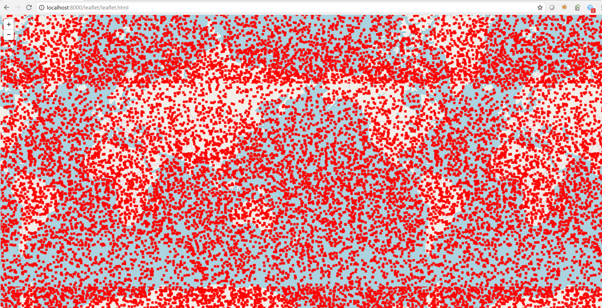
- Get the code from Reository
Conclusion
It is very easy to create a layer in GeoServer and access data using WFS and WMS services.
On the other hand, Leaflet makes a lot easier to expose data on the map.
References
Copyright of geoserver image is © wikipedia.org
{kind=link}
http://geoserver.org
https://github.com/ngageoint/elasticgeo
https://docs.docker.com/engine/reference/commandline/build/